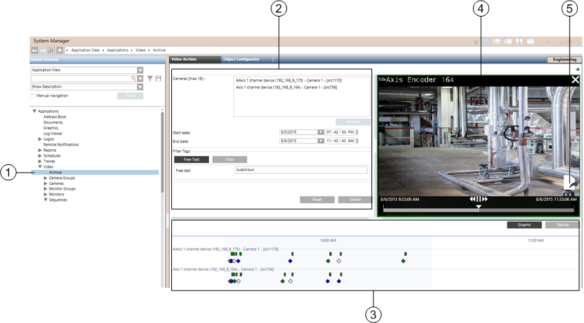
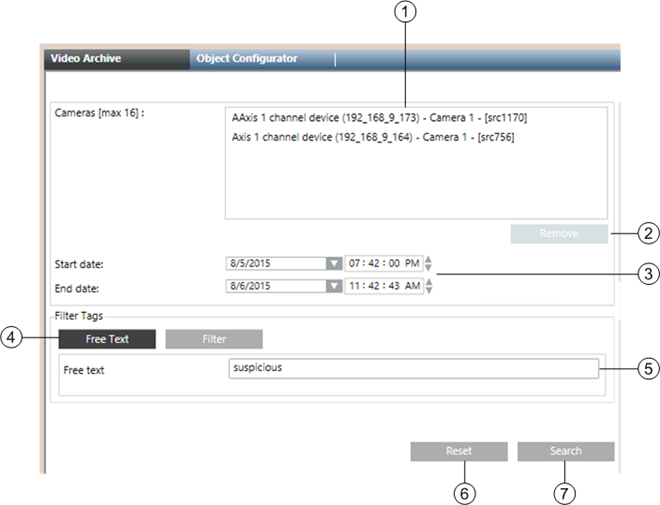
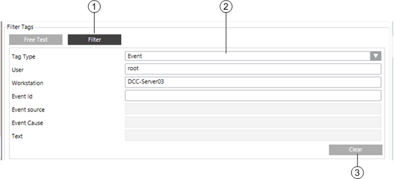
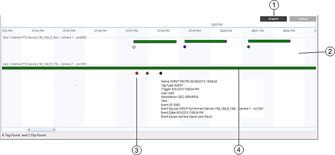
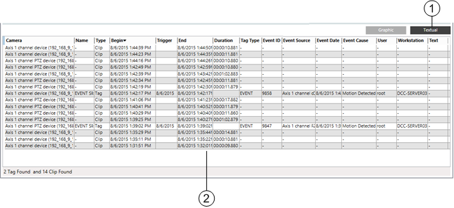

Video Recording Archive Reference
When you select Video >Archive in System Browser, you access the Video Archive tab, from which you can run queries to search for recordings. For step-by-step instructions see Finding Recordings in the Video Archive.
The Video Archive tab is organized in three sections:
- A query definition section on the left-hand side, where you can enter the parameters and run the query.
- A timeline section at the bottom, which shows the query results: recordings and tags that match the query definition. As in the Timeline in the Contextualpane, you can select to display the query results in both graphical and textual mode.
- A preview monitor section where you can preview the video recording. From the timeline, you just need to drag-and-drop the selected video or tag onto such a preview monitor.

Video Archive | ||
| Name | Description |
1 | Archive node | Archive node in System Browser |
2 | Query definition section | Allows for entering search parameters |
3 | Timeline section | Displays results in graphical and textual mode |
4 | Preview monitor section | Allows for replaying the selected recording |
5 | Export icon | Allows for exporting the video recording. Click it again to cancel an export in progress. |
Query Definition Section
In this section you can enter the parameters of your query. The parameters comprise:
- Cameras, the list of cameras to consider.
- Period of time (Start date / End Date) to consider.
- Free Text: simple search for a text string contained in any position of the tag comments.
- Filter: a more advanced tag search. For details see Tag Filter Parameters, below.

Video Archive Query | ||
| Name | Description |
1 | Cameras | Allows for dragging-and-dropping up to 16 cameras, whose recordings will be included in the search |
2 | Remove button | Allows for removing a camera from the search list. Select the camera and click the button |
3 | Start date / End date | Allows for defining the time interval |
4 | Free Text and Filter buttons | Allows for choosing between tag-search options: |
5 | Free text field | If specified, includes a tag text in the search. Not case sensitive. |
6 | Reset | Resets to default the current set of parameters |
7 | Search | Runs the query |
Advanced Tag Filters
The advanced tag filter parameters become available when you click the Filter button.

Tag Filter Parameters | ||
| Name | Description |
1 | Filter button | Allows for selecting the advanced filtering |
2 | Parameter fields |
|
| Tag type: | Event, Recording, Free, Manual, or Playback |
| User | Username of the user who started the video recording, use root for system-initiated recordings such as event recordings |
| Workstation | Name of the station from which the video recording was started, use the server station name for system-initiated recordings such as event recordings |
| Event ID, Source, Cause | For event recordings |
| Text | Text to search for in tag comments. Not case-sensitive. |
Quick Tips:
- Enter the required fields sequentially.
- Specify root user and server name for system-initiated videos.
- Just enter the beginning of the strings to search for.
IMPORTANT: In the Filter search, depending on the first parameter you enter, you can only specify the applicable set of other parameters. Be aware of the following:
- You must enter the parameter values in the order they are presented by the system. Starting from your first selection, the applicable fields are enabled one after the other while you enter the values to search for. Due to this mechanism, certain combinations of fields are not possible. For instance, you cannot search for an Event ID without specifying User and Workstation.
- You do not need to specify the full content of the string fields, as it is sufficient that the beginning of the string matches. However, unlike the Free Text search, the Filter search will not find a text located in the middle of the fields. For instance, to find the Event CauseAutomatic Fire Alarm, you can type Auto, but not Fire.
Archive Search Results
The results of the search display in the timeline section at the bottom of the Video Archive tab. The timeline shows recordings and tags that match the query definition. As in the Timeline in the Contextual pane, you can analyze the query results in both graphical and textual mode.
Once you identify the recorded video you want to view, you can display it on the preview monitor or on any monitors of your video view. Video display controls allows you to quickly scan the recorded images starting from the trigger point.
Results in Graphical Timeline

Graphical Timeline | ||
Item | Name | Description |
1 | Graphic tab | Select graphic display here. |
2 | Timeline | Graphically displays recordings and tags on a timeline grid. |
3 | Tag diamond | Shows a tag: double-click the diamond to expand the tag duration on the timeline. Drag-and-drop it onto a monitor to replay the recording. Note the tag color code |
4 | Recording bar | Shows a recording: drag-and-drop the bar onto a monitor to replay the recording. |
Results in Textual Mode

Textual Timeline | ||
Item | Name | Description |
1 | Textual tab | Select textual display here. |
2 | Item list | Lists recordings and tags in a table. Select a row and drag-and-drop an item onto a monitor to replay the recording. |
Replay Controls on Monitors
Monitors that are playing back recorded video are highlighted with a green border. When you hover the mouse over the monitor, playback controls become available.

Replay Controls | ||
| Item | Description |
1 | Speed and direction | Current speed and direction of playback, as set by the playback controls (play, rewind/fast forward). |
2 | X symbol | Close the playback session. |
3 | Export | Export the recording of the time period being displayed. |
4 | Snapshot | Take a snapshot of the image being played back on the monitor. The image file is saved on the Desigo CC server. See Snapshot Location on Server. |
5 | Tag | Bookmark the current point in the video clip. This creates a playback tag (yellow diamond) in the timeline. |
6 | End time | Based on the post-trigger time (see Global Video Control Commands). It is set to 1 hour for recordings started by Manual and Free tags. Depending on the VMS configuration, video images may not be available as far as one hour later. |
7 | Playback controls | Rewind |
8 | Start time | Based on the pre-trigger time (see Global Video Control Commands). It is set to 1 hour for recordings started by Manual and Free tags. Depending on the VMS configuration, video images may not be available as far as one hour earlier. |


 , play/pause
, play/pause  /
/ and
and  fast forward.
fast forward. Jump to recording trigger time
Jump to recording trigger time